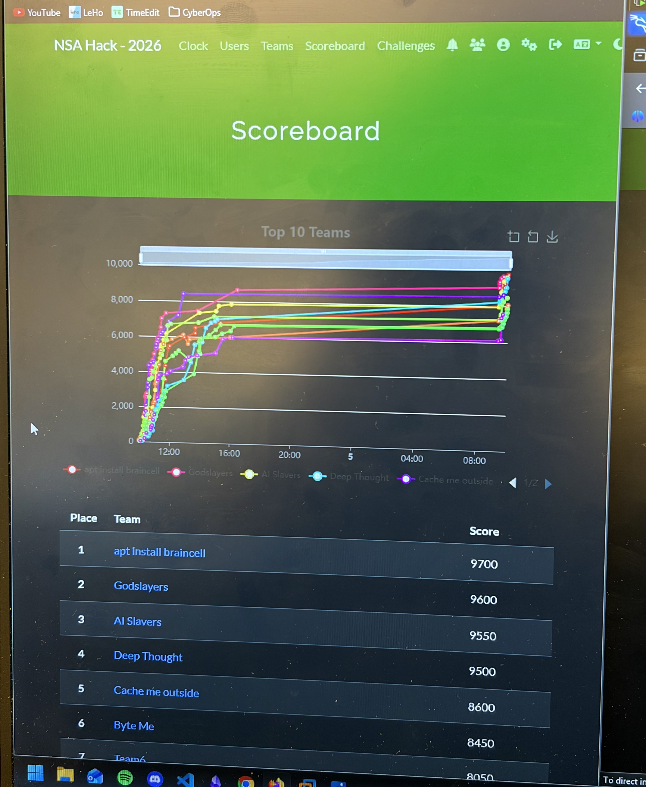

After the amazing first day Monday was, we woke up fresh and early to start the second day of this project week. We went to the classroom pretty early to set up our laptops and be ready when the new challenges dropped.
Setting up for the first full day of CTF challenges.Although collaborating was not allowed, we could always rely on other groups to help us with technical issues, problems, or any questions whatsoever. Every group had the perfect blend of Howest students and Skövde University students; everybody got along very well.

After some great hours of competitiveness, this is what the scoreboard looked like, with the amazing 'apt install braincell' in first place. Shortly after, we went out to explore the city for some food.
The scoreboard after a competitive morning of challenges.With our bodies and minds full of new energy, we went back to the classroom to keep working on the challenges we weren't able to solve in the morning. It was nice to see that there was a lot of variety in the challenges themselves, from IRL challenges to cryptography. Sadly, there was no reverse engineering, as the Skövde University students did not have any hands-on experience with this.

To end the day, we joined the movie night at the university and watched WarGames (1983), a classic cyber movie about a teenager who accidentally accesses a military system and nearly starts a nuclear conflict. It was the perfect way to wrap up a long day of CTF challenges, teamwork, and problem solving.
WarGames (1983) at the university movie night.
Since the movie night was optional, some of us also took the chance to explore more of Skövde in the evening and enjoy the good weather.
Exploring Skövde in the evening.